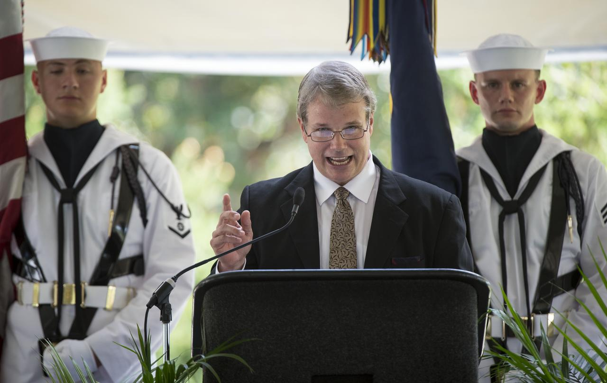
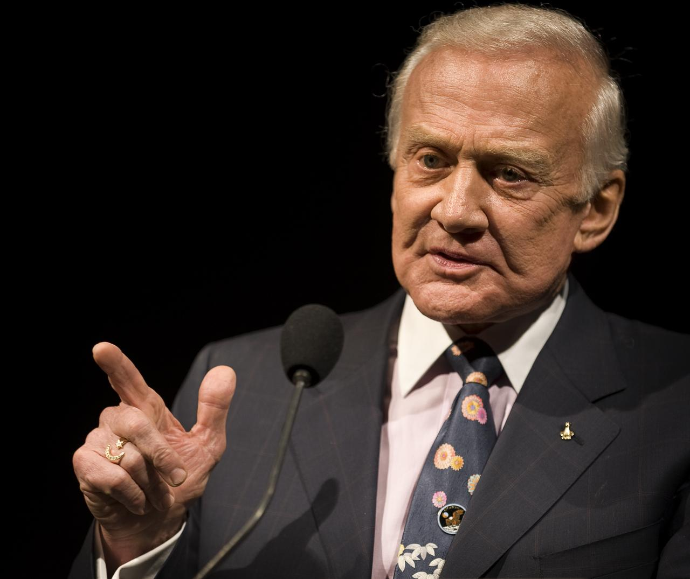
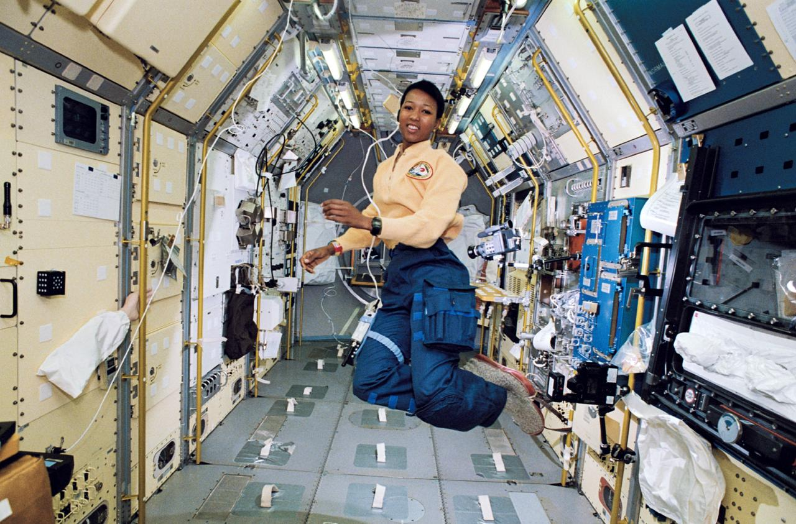
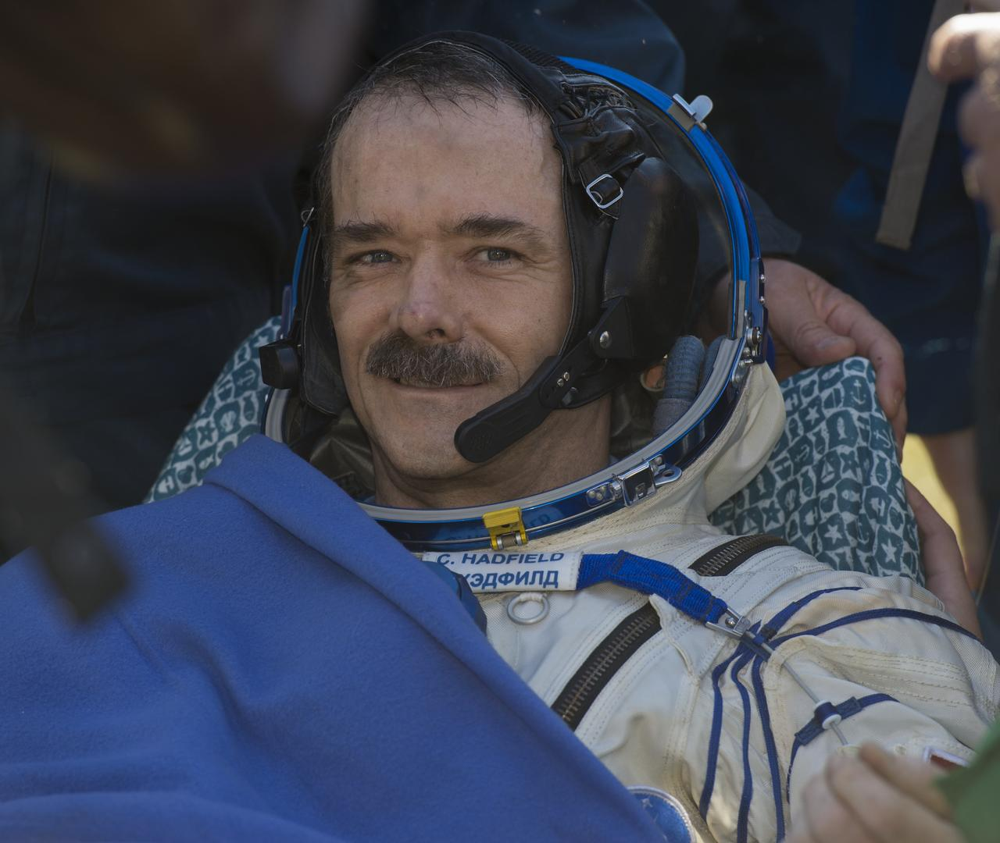
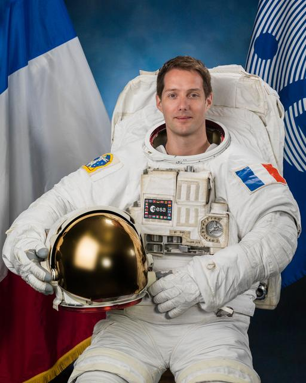
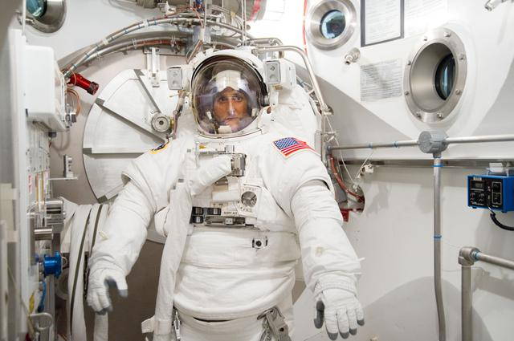
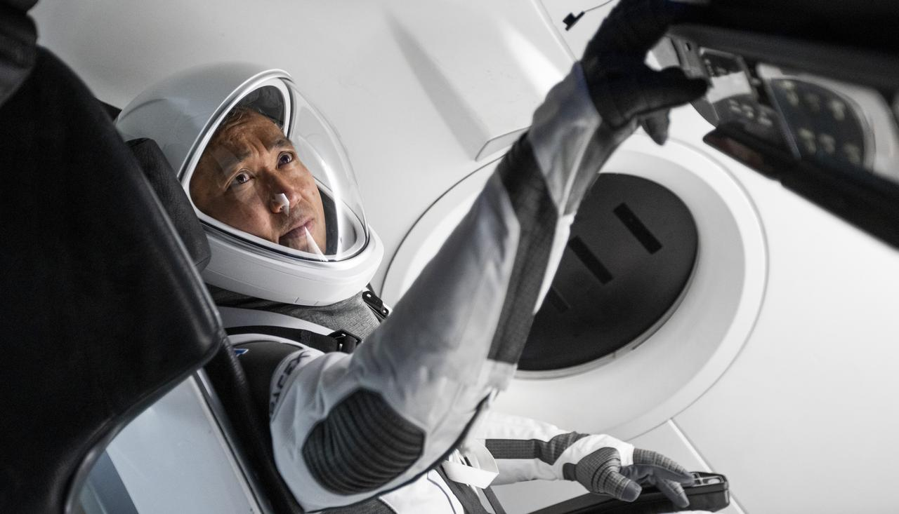
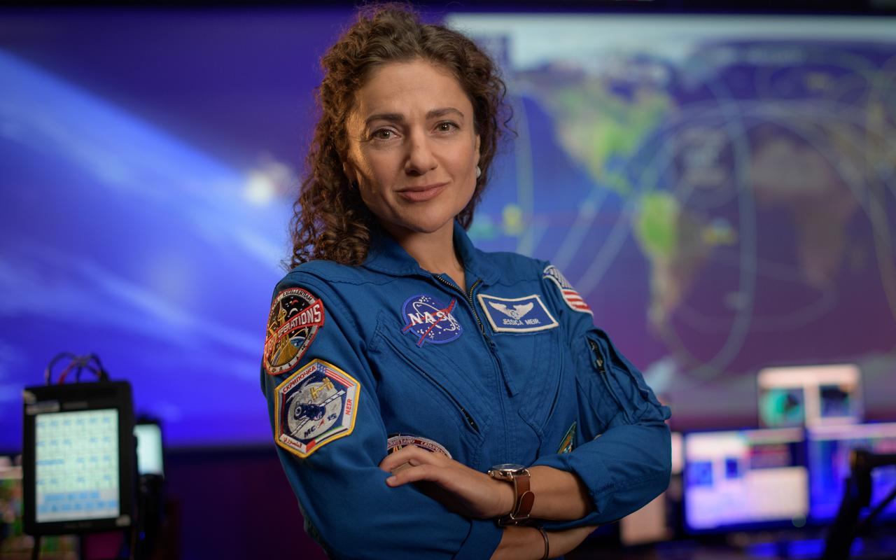
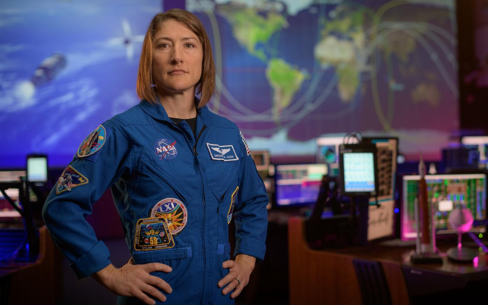
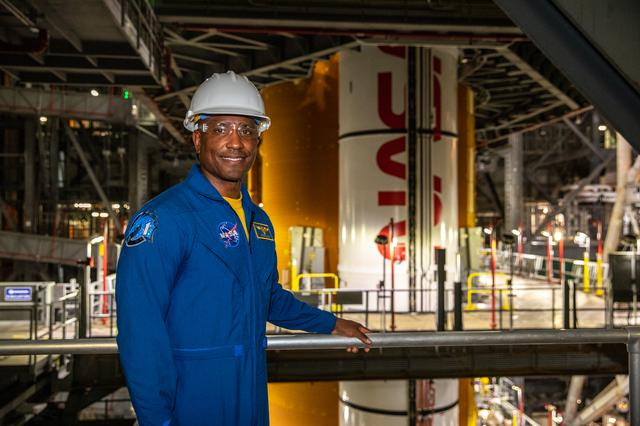

Neil Armstrong
Apollo 11 sırasında Ay'da yürüyen ilk kişi, test pilotu ve havacılık mühendisi.
Dinamik bir kaşif koleksiyonunu gözden geçirin

Apollo 11 sırasında Ay'da yürüyen ilk kişi, test pilotu ve havacılık mühendisi.

Apollo 11 için Ay Modülünü pilotladı ve ABD için ilk uzay yürüyüşünü gerçekleştirdi.

Uzaydaki ilk Afrikalı-Amerikalı kadın, STS-47'de görev uzmanı olarak görev yaptı.

ISS'in eski komutanı, uzay bilimini medya aracılığıyla popülerleştirmesiyle tanınır.

ESA astronotu, havacılık mühendisi ve havayolu pilotu, Proxima ve Alpha görevlerinde uçtu.

Kadınlar için rekor kıran uzay yürüyüşü süresine sahip deneyimli NASA astronotu.

Deneyimli JAXA astronotu, Uluslararası Uzay İstasyonu'nun ilk Japon komutanı.

NASA astronotu ve deniz biyoloğu, ilk tamamen kadın uzay yürüyüşünün bir parçası.

Bir kadın tarafından en uzun tek uzay uçuşu rekorunu elinde tutuyor ve Artemis II mürettebatının üyesi.

SpaceX Crew-1 pilotu ve Artemis II görevine atanan NASA astronotu.